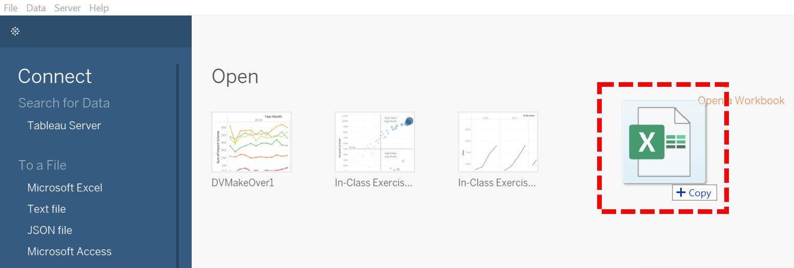
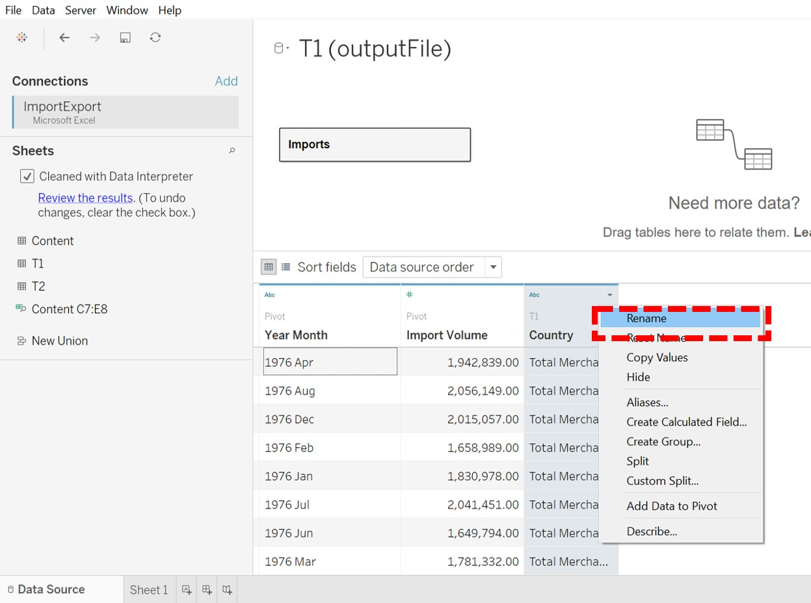

Overview
Statistics on merchandise trade data for various regions and markets are compiled by Enterprise Singapore, and provided by Department of Statistics (DOS), Singapore. From this dataset, a chart depicting the import and export volumes for the top 6 trading countries for the year 2019 2020 was generated. We have attempted a makeover on this chart using Tableau to improve on its clarity. This post would illustrate the makeover process and cover the following sections:
- The Original Visualization
- Critique to Identify Areas for Improvement
- Sketch of Proposed Design & Comments
- Step-by-Step Guide to Creating the Proposed Visualization in Tableau
- The Final Visualization
- 3 Major Insights Revealed by the Final Visualization Prepared
- References
1. The Original Visualization
2. Critique to Identify Areas for Improvement
2.1 Clarity
- There are no captions or commentaries. It is not clear what message is to be conveyed with the charts.
- Title does not match what is illustrated in the charts. Title says 2019 2020, but according to the x-axes of the charts, the periods illustrated are mostly 2019 2021, and only 2020 for Japan. It is not clear what the scope of the visualization is.
- The X-axis titles are inconsistent with label markings and graphs presented. Which month and which period does Month of Period refer to? The variation of the line graphs show that the data presented has a higher resolution than Year but it is not clear what resolution it is exactly. There are also no tick marks on the axis nor gridlines in the chart area, the reader is unable to reference which data points correspond to which and what time units.
- The Y-axes have no units. It is not clear what the unit of measurement is. It is also not clear what M in the axis labels stand for. The scale between the primary and secondary Y-axis for is different within the chart of each country, this would mislead the reader in terms of interpretation of how the import and export volumes compare with each other. The different scales between the charts of each country would mislead the reader as well for e.g.direct glance of the charts of Mainland China and Japan shows as if both countries have similar import/export volume, when their quantities are actually very different. Comparison of import and export volumes across countries is rather painful.
2.2 Aesthetics
- Title is too small and does not stand out. The font size is even smaller than the individual chart titles. The alignment is off-centre as well.
- Display of country charts is not in any order of trade volume. The reader must decipher the measures on his/her own from the charts before the order can be determined.
- The dimensions of each country chart are inconsistent and misaligned. E.g. The width of Hong Kongs chart is narrower than that of Malaysias. This makes the overall outlook messy.
- The type of chart (area chart) applied here is unsuitable as we can hardly differentiate between the chart for import and export. The area overlaps also masked the actual charts and inadvertently created a third shade of colour which made the charts even more difficult to interpret.
- The colours chosen for the area charts are unfriendly to those who are colour-blind - protanopes and deuteranopes will not be able to differentiate between the two shades.
- Abbreviation is used for United States. When it is used as a location or noun, it should be spelt out in full.
3. Sketch of Proposed Design
Sketched on Microsoft OneNote for Windows 10
4. Step-by-Step Guide: Creating the Proposed Visualization in Tableau
4.1 Data Preparation
The respective Imports and Exports data are extracted from the DOS website, as OutputFile.xlsx.
Exploring the data of the file in Microsoft Excel, we can see three tabs Content, T1 and T2. From the description, T1 is for Imports, and T2 is for Exports data.

We then import the data into Tableau for processing. We do this by dragging the OutputFile.xlsx file into the Tableau window.

Once the data is imported, we load the individual tabs for data viewing. Here we load T1 (Imports) data by dragging T1 into the field.

For easier reference, we rename the data table to Imports.
Right-click T1 > Rename
 We note that there is unnecessary description information in the data table. We can get Tableau to clean this up by checking the Data Interpreter box. Tableau is able to scan through and distinguish the content. This way, only the table containing the data we need remains.
We note that there is unnecessary description information in the data table. We can get Tableau to clean this up by checking the Data Interpreter box. Tableau is able to scan through and distinguish the content. This way, only the table containing the data we need remains.
In the current data structure, each Month-Year is a column but we need this as a Dimension. So we do a pivot on the dataset to convert the data to stacked format.
Highlight all the data columns except the Country column > Right-Click on any highlighted column > Pivot

In the stacked format, rename the columns for easier reference.
 Next we repeat the above steps for T2 (Exports) dataset.
Drag T2 into the field.
We need to tell Tableau how T2 (Exports) is related to Imports. In this case, they are related by their Year Month and Country. As Tableau does not allow the same name for different columns, just rename the columns in the Exports dataset as Year Month 2 and Country 2 after doing the pivoting.

For both tables, we should check that variables are recognized in the correct format.
- Year Month -> Date
- Import / Export -> # (Number)
- Country -> Abc (String)
Only Year Month is not in the correct format yet. Change that to Date format.

Note that the Country names are illustrated together with the units (Thousand dollars). These units will also appear in the visualization chart labels. We can amend this by doing a Custom Split on the Country column.
Use the separator ( , and split off the first 1 column.
Now you will have the country labels on their own.

According to the Task, we only need to illustrate data for the period 2019-2020 and for 6 countries : Japan, Hong Kong, Taiwan, United States, Malaysia and Mainland China. This data is filtered out using Filters.

Filters are created for Country - Split 1, Country 2 - Split 1, Year Month and Year Month 2 as shown.

 The final filters list is as shown.
The final filters list is as shown.

We then rename Country-Split 1 and Country-Split 2 to Country and Country 2 by doing the following renaming in sequence. We need to do this as the original longer Country variables is currently taking up the variable name.
- Country -> Country Long
- Country 2 -> Country 2 Long
- Country-Split 1 -> Country
- Country-Split 2 -> Country 2
4.2 Visualization Chart Preparation
Next, we proceed to add Worksheets to create our visualization charts. We would need to create 3 charts before compiling all of them into one Dashboard:
- Imports Line Chart
- Exports Line Chart
- Balance of Trade Bar Chart
4.2.1 Creation of Imports/Exports Line Chart
The steps listed below are for the creation of the Imports line chart. Similar steps are to be repeated for the Exports line chart.
Create a new worksheet, rename it to Imports.
Drag Year Month to Columns, and Imports($000) to Rows.
Click the + on Year Month twice to express the data in higher resolution of Year and Month. Note that Quarter appears first but we can drag and pull it out of the field to remove it.
Drag Country to the Color Marks so that the line charts for the different countries will be differentiated by color.

Notice that the Import (and Export) values are expressed in Millions and the data header says (Thousand Dollars). This means we are expected to do a conversion of the values from Millions to Billions. This is not intuitive. We shall convert the values so that it is displayed in Billions directly.
We do this by creating a Calculated Field.
Right-Click on the Imports($000) measure > Create > Calculated Field

Key in the formula for the calculated field, which is essentially multiplying the current value by 1000.
Replace the Imports($000) with the newly created Imports($) measure in the Rows field

Colors assigned automatically by Tableau to each Country are edited for easier visual reference.
Click the little down arrow in the Colors Legend field > Edit Colors
The Jewel Bright color palette is used here as the colors are vibrant and distinct. Tableau will automatically assign the colors to each country. To avoid having green and red in the same display, manually change Taiwans assigned Green to Purple.
Click Taiwan > Click the Purple box
 The months in the x-axis label are spelt out in full. This takes up unnecessary space. These can be shortened into their abbreviated forms and still be comprehensible.
The months in the x-axis label are spelt out in full. This takes up unnecessary space. These can be shortened into their abbreviated forms and still be comprehensible.
Right click anywhere on the x-axis > Format > Header > Default > Dates > Abbreviation
X-axis title can be removed as the Year and Month labels are self-explanatory
Text is formatted to be in Bold for them to be clearer. Text sizes are also sized accordingly to fit into the dashboard. They should be sized big enough to be clear, yet small enough such that more labels can be contained within the space.
For easier tracking of the values for each month, vertical gridlines are also added to the line chart. Light grey gridlines are chosen so as not to clutter the outlook of the chart and overpower the line graphs themselves.

Tentative output of the Imports($) line chart is as below.
The same steps above are to be carried out to create the Exports($) line chart from the Exports data.

4.2.2 Creation of Balance of Trade Bar Chart
The Balance of Trade is the difference between a countrys exports and imports. It is an important component in determining the current account of a country1.
Balance of Trade (over a given time period) is calculated by:
A Trade Surplus occurs when there is a positive trade balance, when Exports > Imports.
A Trade Deficit occurs when there is a negative trade balance, when Exports < Imports.
Create a new worksheet, rename it to Bal of Trade for easy reference.
To compute the Balance of Trade, we create a new Calculated Field.
Click on Analysis > Create Calculated Field
Name the newly-created field Balance of Trade ($).
Since Balance of Trade = Value of Exports Value of Imports, we drag the Export($) and Import($) variables accordingly into the equation for computation.
Drag Year Month to Columns, and Balance of Trade ($) to Rows.
Since we would be grouping the charts by Countries for easier comparison, we drag Country to Columns as well, and place it before Year Month, so that the first grouping will be by Country, then for each Year Month within each Country.

Drag Balance of Trade ($) to the Color Marks so that the magnitude of bar charts will be differentiated by color.
Drag the same to the Label Marks so that labels can appear for each bar.
Right-click on the Color bar to edit the colors assigned.
Since we want to differentiate between positive and negative trade balance, to distinguish between trade surplus and trade deficit status, we assign one color to values > 0, another to < 0. So we set Center: 0. In this case, blue is positive, red is negative.
Labels are formatted to be shown in units of Billions (B), to be consistent with the axis. Given the scale magnitude, its not necessary for labels to be precise to the last dollar. With these labels, the Y-axis can also be removed as it is not required.
4.2.3 Creation of Dashboard
Now that we have created all the charts required, we shall proceed to create the dashboard.
Create a new Dashboard, rename it to Trade Dashboard.
Add title: Trade Statistics of Top 6 Trading Countries
Subsequently, we list out the 6 countries. The text color of each country should follow the corresponding colour of its line in the Import/Export line charts. This will double up as a legend for the line charts. A dark background is chosen for the colours to stand out more.
Adjust the font size and use bold face accordingly to use inking to highlight the main title, and the subtitles.

The Dashboard layout size is retained as Fixed Size instead of Automatic, which would misalign the intended layout of our charts when it is displayed in Tableau Public. A Fixed Size layout will retain the layout of the charts. The Desktop Browser (1000x800) is used as it is more universal and would fit most laptop/desktop screens without distorting the layout.
We then plan the layout of the Dashboard. In this case, we need to allocate space for the Imports and Exports line charts, and the Balance of Trade bar chart with the commentary at the bottom. Text object is used for the commentary section.
Finally, drag the individual sheets to the spaces allocated. Formatting of the individual charts like font sizes, title alignment etc. are done in the respective worksheets.
For the Commentary, use a Text object.
What we want to stand out here is the main point for each country, so we can apply inking here. We give each country a bold font, bigger font size, and font color according to their trade balance status. We also highlight other special points in the commentary by applying a bold font.
And your dashboard is complete!
5. The Final Visualization

This dashboard is posted on Tableau Public here.
5.1 Advantages of Proposed Design
The title tells us the scope of the display: Trade statistics, top 6 trading countries listed, and for the years 2019 to 2020. This is consistent with the charts displayed in the dashboard.
Separate Line Chart for Import and Export to allow easy comparison across each country, over the month and year, for the same metric. Trends can be picked up easily.
As both 2019 and 2020 values for the same metric are plotted on the same axis, charts can be compared easily across the two years. Values are expressed in the charts as their exact values (Billions) which is more straightforward instead of having to convert Thousand Millions. Gridlines are added in subtle grey to the line charts to allow easy tracing of values yet not cover the main charts.
Same colors have been applied for each country in both line charts to allow convenient comparison. For example, we can see that Mainland China (orange line) is the top Exporter and Importer, while Hong Kong (red line) is the second top Exporter and the lowest Importer. The original color assigned automatically to Taiwan was green. This was deliberately changed to purple so as to avoid having a combination of red and green in the same display, to facilitate reading by people who are colour-blind.
We also avoided the need for a legend as the color codes have been embedded within the title, killing two birds with one stone.
The Balance of Trade computation gives further insights to the raw import/export values of the countries. This chart is placed below the line charts as it signifies development of the data from top to bottom > from raw values to a useful ratio.
A commentary is also included to summarize the trade balance in each country, whether they experienced a trade surplus or deficit in 2019 and 2020. The text color of each country directly indicates their trade balance status - blue for trade surplus, red for trade deficit. This is so that readers can differentiate the status of each country at one glance. Noteworthy points are also expressed in bold to be highlighted.
The height of the bars in the Balance of Trade bar chart directly gives us a sense of the magnitude of the trade balance, and the colors tell us whether it is a trade surplus (blue) or deficit (red), with varying intensities as well.
Note that the order of the country list is in alphabetical order and consistent throughout the display, giving a sense of uniformity.
6. 3 Major Insights Revealed by the Final Visualization
There was a turnaround in the trade deficit status of United States between 2019 and 2020. In January 2020, United States (US) and China signed the Phase One Trade Deal, which eased the tensions from the long-standing trade duel between the two superpowers. This move will boost Chinas purchases of US products, and also reduce US tariffs on goods imported from China. As seen from the Imports and Exports line charts, we saw an overall increase in Exports for US in 2020, coupled with a corresponding dip in Imports however. This thus resulted in the turnaround in USs trade balance position to a surplus of $5.67 billion from a trade deficit position of $14.4 billion in the previous year. For China, while the pickup in Exports was not as strong as USs at the start of 2020, the spike came in July 2020 and the high value sustained. We could see that this increase was substantial as it created a higher trade surplus of $5.48 billion for China as compared to the previous year.
Malaysia saw a dip in its exports in Jan 2020 due to the Covid-19 pandemic. It continued to deteriorate and hit a low of $2.9 billion in Apr 2020, when the movement control order (MCO) was imposed. We could see that this has manifested in a 10 times increase in trade deficit from $0.73 billion in 2019 to $11.65 billion in 2020. The impact of the pandemic on Malaysias economy and trade balance is significant.
Other insights include general observations of trends and behaviour specific to each country:
- Hong Kong has a relatively high and consistent trade surplus. By virtue of its strategic geographical location, and infrastructure, it has secured its position as one of Mainland Chinas largest trading partners, playing an important entrepot role between the Mainland and the rest of the world2. It has 99% of shipments coming from re-exports3.
- Taiwan has a relatively high and consistent trade deficit in 2019 and 2020.
- The Export values of Japan and Taiwan are similar and seem to follow the same trend.
7. References
Balance of Trade (site)
Hong Kong and Mainland of China: Some Important Facts (site)
Hong Kong Exports (site)